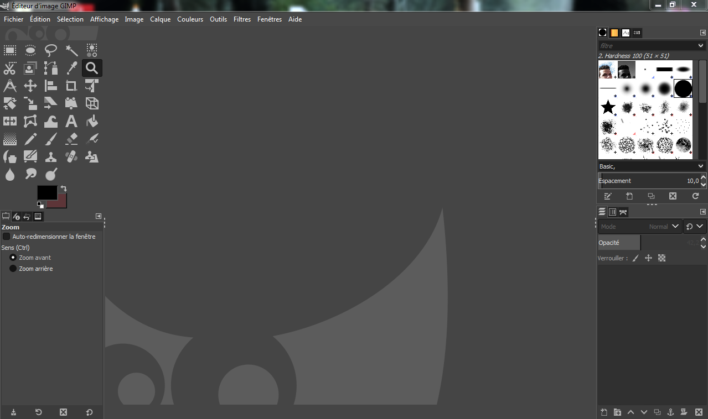
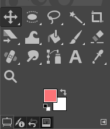
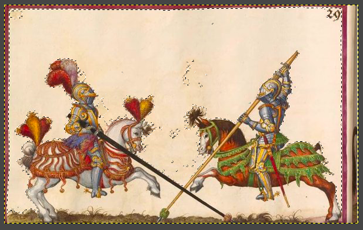
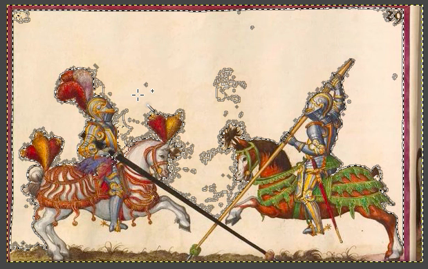
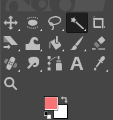
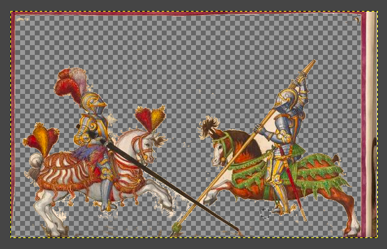
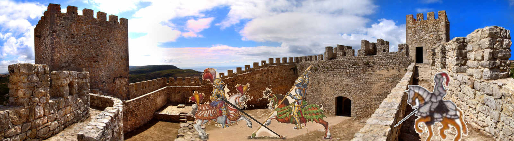
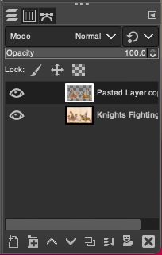

For the tasks with photo manupulating and photo editing, I have chose to use the software GIMP. GIMP is a image and graphics editor that is used for image combinating, manupulation, and editing.
It takes a while to get use to the in and outs of GIMP as it is a complications software with many commands and tools. But after you get the hang of the software, it becomes very easy and straighforward to use.
There are various tools in GIMP, from paintools like bucket fill to transform tools like crop, move and rotate.
(Image of GIMP Toolbox)
However, the tool that helped me the most in GIMP is the "fuzzy select tool." This tool helps highlight sections of the image by basis of colour.
For example, if I wanted to crop out the knights from the background images, I could use this "fuzzy select tool."
  And after I invert the image, I can copy and paste it onto a new layer. In conclusion, I would be left with only the knights and no background images.
Now, this image no longer has a background, so I can add it into other images. (Like the one shown below)
One very confusing thing about GIMP is the settings with layers. Users need to be very careful when copying and pasting as they might accidently be doing that action on the wrong layer.
I have faced this problem many times when copying, pasting and cropping. I wasn't careful enough on which layer I was selecting, therefore, it turns out I've accidently messed everything up. In conclusion, MAKE SURE you're selecting the correct layer when editing the image.